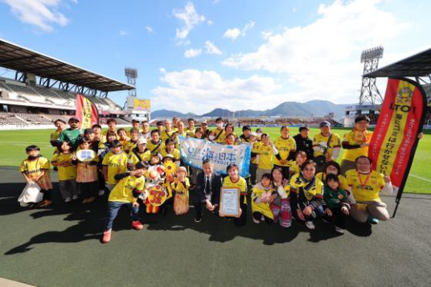
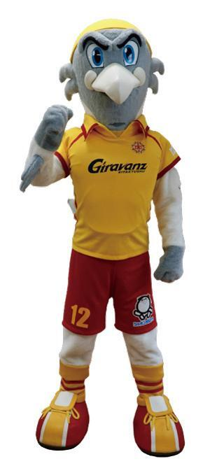
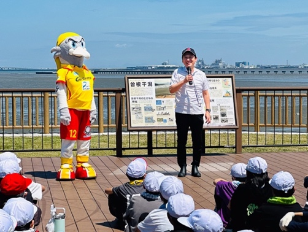
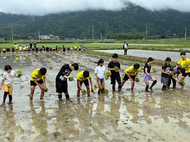

スポーツの力で、自然を守る仲間を増やす
～スタジアムから曽根干潟へ広がる地域共創～
株式会社ギラヴァンツ北九州
株式会社ギラヴァンツ北九州
| 企業名 | 株式会社ギラヴァンツ北九州 |
|---|---|
| 業種 | プロサッカークラブ |
| ホームタウン | 福岡県北九州市 |
スタジアムの熱量を、海と干潟を守る力へ
北九州ネイチャーポジティブネットワークでは、企業の多様な取り組みを紹介しています。事業と自然との関わりを見つめ直すきっかけを提供し、地域経済の活性化と生物多様性の保全を両立する「ネイチャーポジティブ」の実現を目指しています。
今回は、ネットワーク参画企業である株式会社ギラヴァンツ北九州が、プロスポーツクラブならではの発信力と人を巻き込む力を生かし、ファン・サポーター、学校、企業、行政とともに進める海ごみ対策や曽根干潟の保全活動をご紹介します。
ギラヴァンツ北九州は、北九州市をホームタウンとするプロサッカークラブです。トップチームの試合運営に加え、アカデミーやサッカースクール、地域貢献活動を展開し、「スポーツの力で、人を、まちを、もっと豊かに」という理念の実現を目指しています。
プロスポーツクラブは、試合開催によって人の流れや交流を生み、地域企業と市民をつなぐ地域経済の担い手であると同時に、選手・マスコット・スタジアム・SNSを通じて幅広い層へ働きかける発信者でもあります。同クラブは、この特性を環境保全活動にも活かし、「楽しい」「応援したい」といった要素を加えることによって、みんなが参加したい活動へ変える仕組みづくりを進めています。
2025年には北九州市と「サステナビリティ」をキーワードとする包括連携協定を締結し、Jリーグクラブとして初めて「ネイチャーポジティブ宣言」を実施。マスコットの「ギラン」は、曽根干潟に飛来する絶滅危惧種のズグロカモメがモチーフになっており、「アーバンネイチャー北九州PR大使」として自然の大切さを伝えています。
クラブの強み：スポーツの共感力 × ファンとの接点 × 地域をつなぐ発信力


ギラヴァンツ北九州は、NPO法人海さくらが日本財団と連携してスポーツと清掃活動を軸に海の環境問題に取り組む、「LEADS TO THE OCEAN（LTO）海につづくプロジェクト」に2025年から参画しています。ホームゲーム終了後、ファン・サポーターとスタジアム周辺のごみを拾い、街から海へ流出するごみを減らしています。参加回数に応じたポイント付与やシーズン終盤の表彰によって、清掃を継続参加へつなげている点が特徴です。
さらに「＃クリーンシート北九州」で、日常の環境配慮行動をSNS上に共有・可視化。試合観戦という楽しい体験の延長に参加機会を置くことで、従来の環境活動に届きにくかった層にも行動の入口を広げています。
曽根干潟は、環境省の「重要湿地」に選定され、絶滅危惧種のカブトガニの産卵地や、渡り鳥・希少な底生生物の生息地となっている北九州の重要な自然資本です。ギラヴァンツ北九州は、曽根東小学校が続けてきた清掃活動に、継続的に参加しており、2026年度からは北九州ネイチャーポジティブネットワークを活用し、より組織的な体制で地域企業や団体、保護者とともに参加しています。2026年春の活動では合計710kgのごみが回収されました。
これは単なる美化活動ではありません。子どもたちにとっては身近な自然を学ぶ環境教育の場、企業にとっては地域課題に住民と協働で関わる場、ファンにとってはクラブの象徴「ギラン」のふるさとを自分たちで守る場となり、保全を地域の共通体験へ変えています。
ギラヴァンツ北九州のフレンドリータウンである苅田町と、農業組合法人白川広域営農組合、苅田町子ども育成連合会と共に、地域の特産品である「白川米」を地域の子どもたちやアカデミーの選手たちと一緒に育てる農業体験プロジェクトに取り組んでいます。ギラヴァンツアカデミーの選手たちが種まき・田植え・稲刈りに関わり、収穫した「白川米」をトップチーム選手がホームゲームで販売しています。売上は苅田町生涯学習課を通じて、親子招待事業に活用しています。農業を学ぶ機会、地域産品の認知・販売機会、家族の観戦・交流機会を一つの流れにして、自然との関わりと地域経済を具体的につなぐ取り組みを行っています。
ギラヴァンツ北九州は、北九州市との包括連携協定のもと、まちのにぎわい、健康、こども、環境、Woman Willなどの分野で連携するとともに、Jリーグクラブとして初となる「ネイチャーポジティブ宣言」を行いました。クラブが持つ発信力と人を巻き込む力を生かして行政・企業・市民をつなぎ、自然保全活動への参加や地域課題の解決を促す「地域のハブ」として、持続可能なまちづくりを後押ししています。


ギラヴァンツ北九州は、ファン・サポーターや地域と連携した生態系保全活動を毎年2回以上実施することを目標に、ホームスタジアム以外での出張LTOや曽根干潟での活動を継続する考えです。さらに、新クラブハウスへの地元産木材の活用、希少植物の保全や野鳥・昆虫の生息環境づくりなど、クラブが主体的に関われる拠点を自然と共生する場へ発展させる構想を示しています。
今後、クラブが地域のサステナビリティ・プラットフォームとして役割を高めるには、試合・学校・SNS・地域活動という多様な接点を生かし、企業や団体の「できること」と地域の自然課題を結び付けることが重要です。参加人数やごみの回収量、生態系への効果、学びや行動の変化を継続的に見える化できれば、保全活動への共感と協力がさらに広がることが期待されます。
ギラヴァンツ北九州の取り組みの本質は、清掃活動を行うことだけではありません。クラブの本業が持つ「人を集め、感情を動かし、仲間を増やす力」を、海ごみ削減や曽根干潟の保全に接続し、自然を守る行動を地域の日常へと広げている点にあります。
自然保全活動自体は収益を生みません。しかし、楽しく参加できる試合日の魅力、企業との共創やスポンサーシップ、子どもの学び、地域ブランドの向上と結び付けることで、活動を続ける人・資金・関係性が育ちます。豊かな自然が地域の魅力を高め、その魅力がさらに保全を支える――この好循環こそ、地域経済の活性化と生物多様性の保全を両立するネイチャーポジティブの姿です。
クラブは自然保全の専門家に代わる存在ではなく、行政、学校、企業、NPO、市民、ファンをつなぐ入口です。北九州市との包括連携協定を基に、スポーツクラブが地域のサステナビリティを動かすプラットフォームへ成長していくこの挑戦は、他地域のスポーツチームや企業にとっても参考となる実践事例です。
※取り組みに関心をお持ちの企業・団体の方は、北九州ネイチャーポジティブネットワーク事務局までお問い合わせください